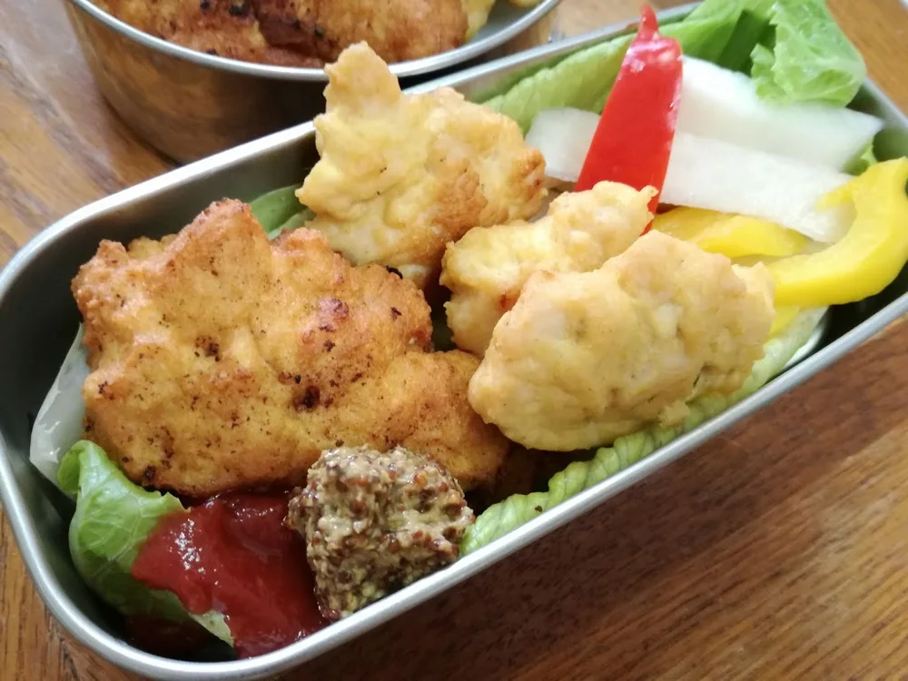
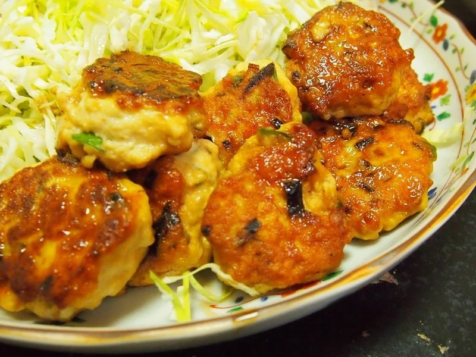
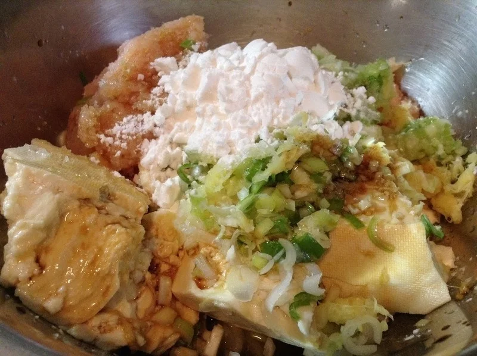

肉・豆腐のおかず
おから豆腐チキンナゲット
粗く刻んだ鶏胸肉に、豆腐、卵、おからパウダーを混ぜて揚げるナゲットです。私が公開してきたおから料理の中でも、揚げ物も適度に楽しみながら、食べ


柔らかく仕上げるポイントは、豆腐の水分を残すことです。水分を取りすぎないようにしてください。粉は10gを量り、焼く前に十分に混ぜ合わせます。
生姜は初版では「1かけ」と書いていましたが、公開ブログに10gの記載があるため、ここでは重さで示しました。
ブログのたれは、醤油、みりん、砂糖などを使う説明で、具体的な分量はありません。ここでは、酒、醤油、エリスリトールの量がそろっている初版のたれを使います。
甘味料を別のものに替えると、同じ大さじの量でも同じ甘さになるとは限りません。ここでは置き換え量を決めないので、まずは記載どおりのたれで作ります。
たれを煮詰める工程と、肉に火を通す工程は分けて考えます。表面にたれが絡んだだけで加熱を終えず、中心まで火が通ったことを確かめてください。
元記事では、肉だねをお湯に落として茹で、冷凍しておく使い方も紹介しています。焼き時間を茹で時間に読み替えず、茹でる場合も中心まで十分に加熱します。
加熱時間は作った時の目安です。容器や調理器具によって仕上がりは変わります。中心まで火が通っていることを確認してください。
やわらかい豆腐鶏つくねの材料・作り方（50kgdiet.com） →
このページは書籍の改訂原稿をもとに掲載しています。元記事は過去の記録のため、材料や表現が異なる場合があります。